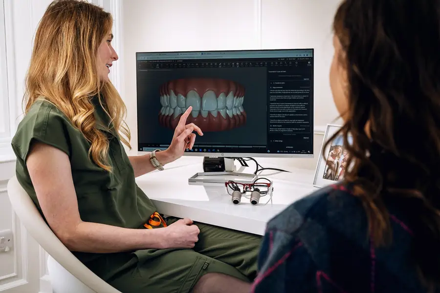
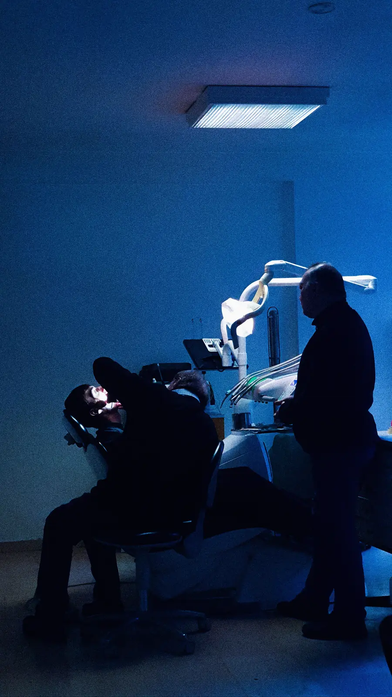
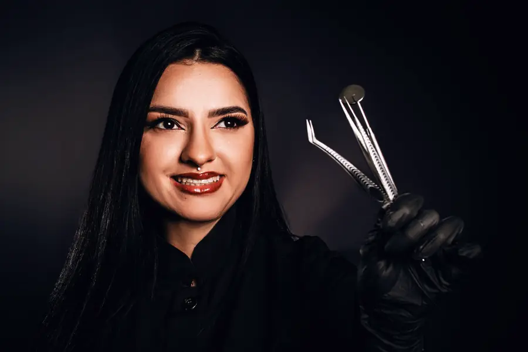

Um sorriso que parece seu.
Implantes, lentes de porcelana e alinhadores planejados em 3D. Você vê o resultado na própria boca antes de qualquer desgaste.
Odontologia estética e implantes em São Paulo
Antes de mexer em qualquer dente, a gente conversa sobre como você quer se sentir ao sorrir. Depois planeja em 3D, mostra o resultado na sua boca e só então começa.
A luz só acende quando o plano está pronto.
Nenhum procedimento começa sem tomografia, escaneamento digital e o seu sim ao ensaio do sorriso.
O que dá para mudar no seu sorriso
Cinco caminhos, com prazos reais. Na avaliação, a gente indica o que faz sentido para o seu caso, inclusive quando a melhor resposta é não fazer nada.
-
Repõe um dente perdido com uma raiz de titânio e uma coroa em zircônia. Quando o osso permite, você sai da cirurgia com um dente provisório.
Ver o implante peça por peça -
Lâminas de 0,3 a 0,5 mm que corrigem cor, formato e pequenos espaços. Em boa parte dos casos, com pouco ou nenhum desgaste do dente.
Avaliar lentes no meu caso -
Sessões no consultório combinadas com moldeiras para usar em casa, com controle de sensibilidade em cada etapa.
Avaliar clareamento no meu caso -
Placas transparentes que você tira para comer. Antes de começar, você vê a simulação do movimento de cada dente.
Avaliar alinhadores no meu caso -
Prótese fixa sobre implantes para quem perdeu vários dentes ou usa dentadura. Ela não sai da boca e não cobre o céu da boca.
Avaliar reabilitação no meu caso
Um implante, peça por peça.
Quatro peças substituem um dente inteiro, da raiz à coroa. Role para separar cada uma, na ordem em que entram na boca.
Montado, ninguém percebe.
- Tomografia 3D antes da cirurgia
- Cirurgia guiada por guia impresso
- Provisório no mesmo dia, quando indicado
- Implante de titânio: fica no osso, no lugar da raiz.
- Pilar dourado: liga o implante à coroa.
- Parafuso de fixação: prende o pilar e pode ser removido na manutenção.
- Coroa em zircônia: feita com a cor e a translucidez dos dentes vizinhos.
Como funciona, da conversa ao último ajuste
-

01Conversa
Uma hora para entender o que te incomoda. Fazemos fotos e vídeos do seu sorriso falando e rindo.
-
02
Diagnóstico 3D
Tomografia e escaneamento digital, sem massa de moldagem. Seu sorriso vira um modelo que dá para girar e medir.
-
03
Ensaio na boca
Aplicamos uma resina provisória sobre os dentes para você ver e sentir o resultado antes de decidir.
-

04Tratamento
Cada procedimento segue o planejamento aprovado, com sedação consciente se você preferir.
-
05
Acompanhamento
Revisões programadas e conversa direta com a sua dentista pelo WhatsApp.
Monte sua primeira consulta
Marque o que te incomoda. A gente prepara a avaliação certa e você chega sabendo o que esperar.
Quem cuida do seu sorriso
Três especialistas que planejam juntos. Seu caso é discutido em equipe antes de chegar até você.
-

Dra. Helena Duarte
Implantodontia e reabilitação
Planeja cada implante na tomografia e opera com guia impresso.
CRO‑SP 00000
-
Dr. Rafael Moura
Prótese e lentes de porcelana
Escolhe cor e formato com você e acompanha o ceramista no laboratório.
CRO‑SP 00000
-
Dra. Yumi Sato
Ortodontia e alinhadores
Simula o movimento de cada dente antes da primeira placa.
CRO‑SP 00000
O que pacientes dizem
Eu evitava sorrir em foto havia dez anos. Na primeira semana com as lentes, minha filha perguntou o que eu tinha feito no cabelo.
Tinha pavor de dentista. Fiz os implantes com sedação e quase não lembro da cirurgia, só do café na saída.
O ensaio na boca foi o que me convenceu. Vi o resultado antes de decidir qualquer coisa.
Sua primeira consulta é uma conversa.
Uma hora, sem compromisso de tratamento. Você sai com um plano por escrito e o valor de cada etapa.
- Horários
- Segunda a sexta, das 8h às 20h
Sábado, das 8h às 13h - Estacionamento
- Manobrista na porta, por conta da clínica